North Chennai
The industrial heartbeat, fishing harbours, and forgotten colonial beginnings.
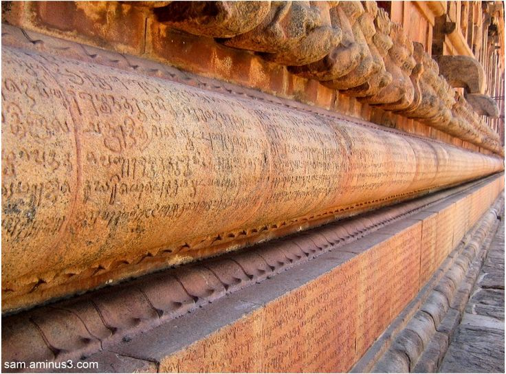
Royapuram Fishing Harbour
A chaotic, vibrant harbour at dawn where the city's freshest catch is hauled in and auctioned amidst the thundering waves.
View on MapTondiarpet Godowns
Faded colonial-era warehouses lining the old port roads, echoing with a century of maritime trade history.
View on Map
Thyagaraja Temple
An ancient Tiruvottiyur shrine older than Chennai itself, with deep ties to Carnatic music history and intricate stone carvings.
View on Map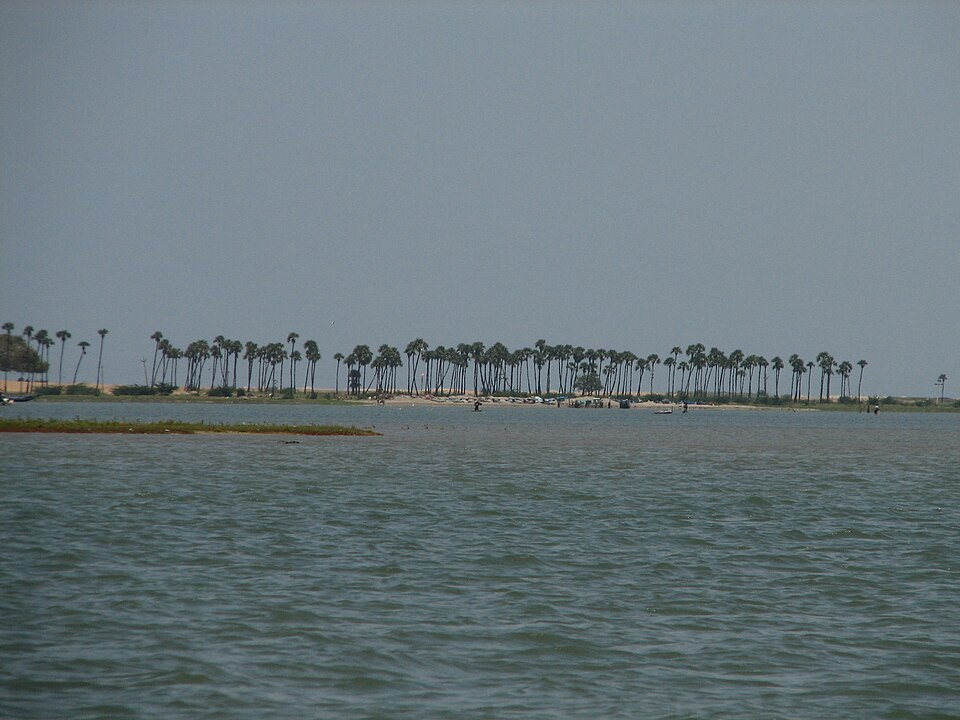
Pulicat Lake
A calm coastal stretch just north of the city, famous for its Dutch cemetery ruins and winter flamingo migrations.
View on Map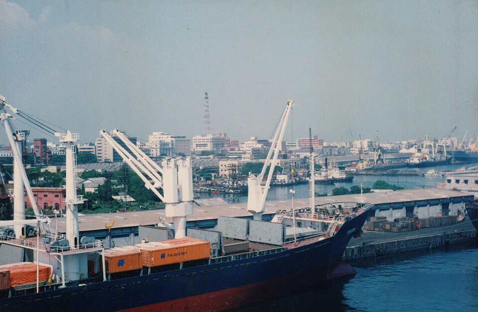
Kasimedu Pier
A scenic breakwater offering gritty, unfiltered views of the sea, popular among locals for evening strolls and sunset watching.
View on MapGeorgetown
The original heart of Madras — merchants, monuments, and memory.
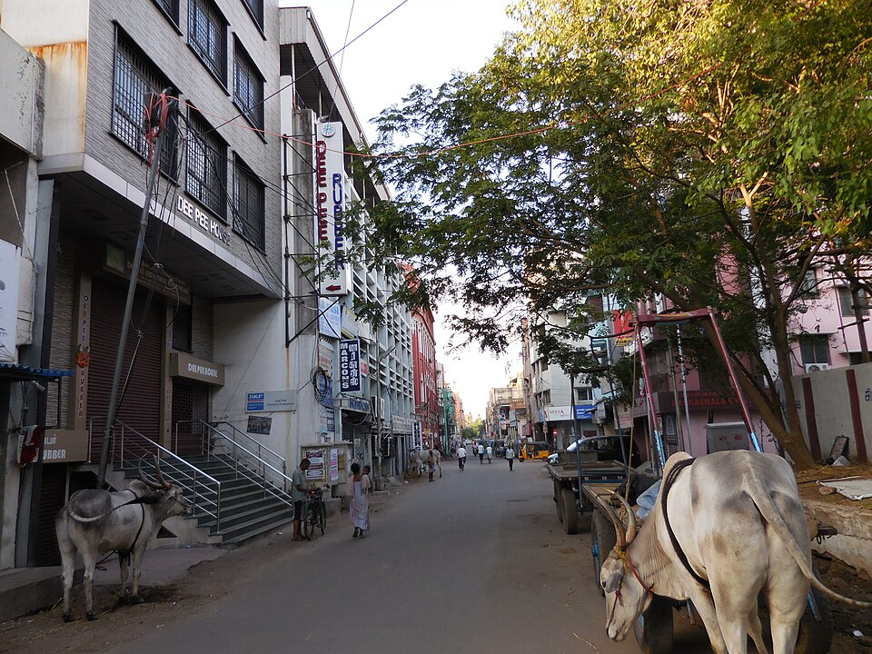
Armenian Street
Home to the 300-year-old Armenian Church, offering a quiet, bell-towered refuge amidst the bustling wholesale markets.
View on Map
Linghi Chetty Street
A narrow lane packed with historic merchants, antique dealers, and small eateries serving authentic local staples.
View on MapBurma Bazaar
A massive, narrow grey-market street along the port wall founded by repatriates, famous for its imported curios.
View on Map
High Court Corridors
An Indo-Saracenic architectural marvel with stunning stained glass, painted ceilings, and domed towers wrapped in legal history.
View on Map
Parry's Corner
The historic intersection where fading colonial trading houses meet the energetic chaos of dense local transport.
View on MapMylapore Belt
Temple tanks, traditional arts, and colonial intersections.
Kapaleeshwarar Tank
A massive, stepped temple tank surrounded by ancient agraharams, especially magical during the floating and dusk festivals.
View on Map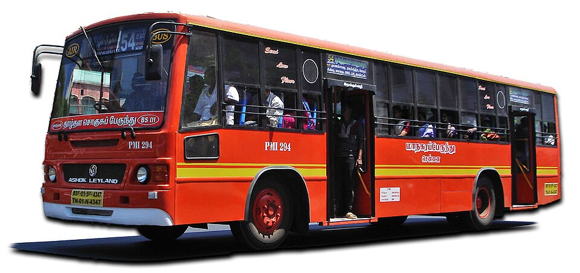
Triplicane Pettai
Ancient residential streets behind the Parthasarathy Temple where heritage tile-roofed houses meet traditional literature.
View on MapSan Thome Backstreets
Quiet, Portuguese-influenced alleys leading to the historic basilica built over the tomb of St. Thomas the Apostle.
View on Map
Luz Corner
The traditional shopping hub of Mylapore with decades-old silk merchants, hidden bookstores, and filter coffee aromas.
View on Map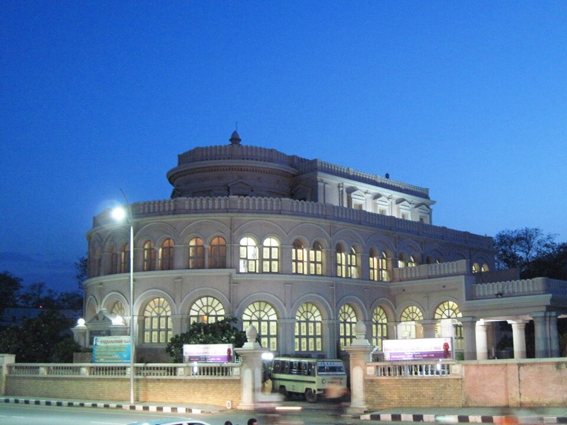
Vivekananda House
A distinctive semi-circular "ice house" built to store imported Boston ice, now hosting exhibits on the philosopher's legacy.
View on MapSouth Chennai
Canopies, crumbling bridges, and coastal breezes.
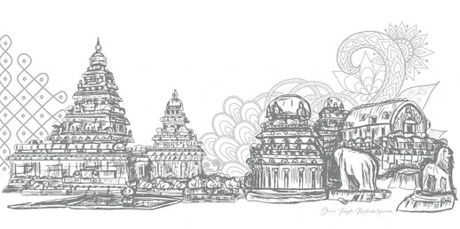
Theosophical Society
A vast, lush 260-acre campus hiding a 400-year-old banyan tree, quiet philosophical libraries, and ancient ruins.
View on Map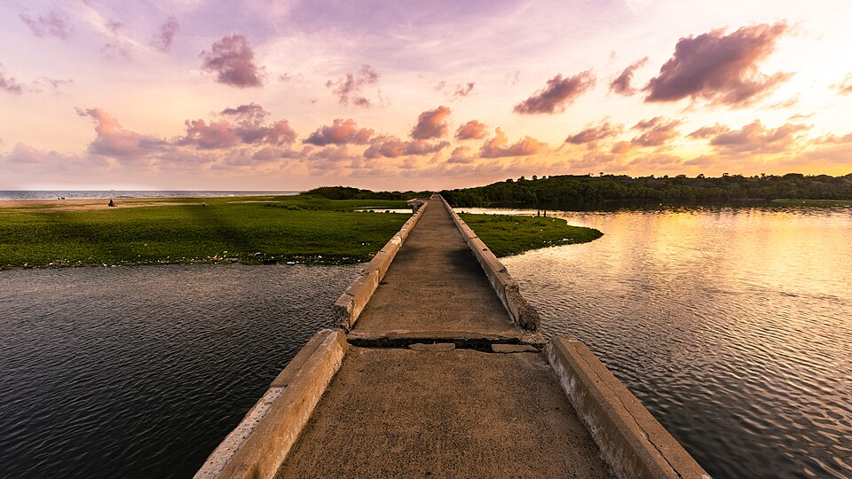
Broken Bridge
A crumbling colonial-era bridge on the Adyar river, reclaimed by nature and popular with local fishermen at dawn.
View on Map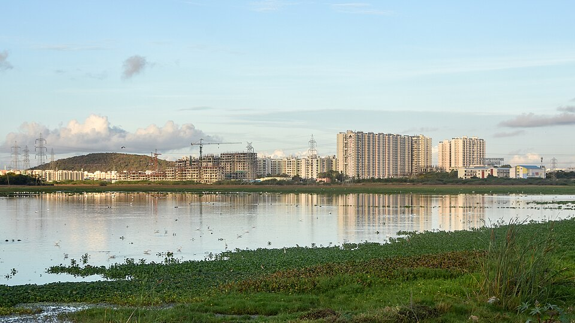
Adyar Estuary
A vibrant, ecologically crucial intersection where the river meets the sea, rich in migratory birdlife and mangroves.
View on MapElliot's Back Lanes
Quiet streets lined with old sea-facing bungalows, bougainvillea walls, and modern cafes tucked away from the main beach.
View on MapKalakshetra Colony
A serene, tree-lined neighborhood famous for its classical dance academy and dedication to traditional aesthetics.
View on MapArt & Craft
Villages of creativity along the coast.
Cholamandal Village
India's largest self-supporting artists' commune, featuring open-air sculptures, studios, and contemporary galleries.
View on MapDakshinaChitra
A breathtaking living museum recreating traditional heritage houses and folk arts collected from across South India.
View on Map
Kalpa Druma
A sprawling, rustic boutique space celebrating indigenous textiles, pottery, and vibrant sustainable crafts.
View on Map
Silambam Akharas
Local, unassuming sand-pit training grounds where dedicated practitioners master the ancient martial art of stick fighting.
View on Map
Rukmini Devi Museum
An intimate collection of stunning textiles, jewelry, and artifacts preserving the legacy of the visionary Kalakshetra founder.
View on MapNature & Estuaries
Wetlands, sanctuaries, and urban escapes.
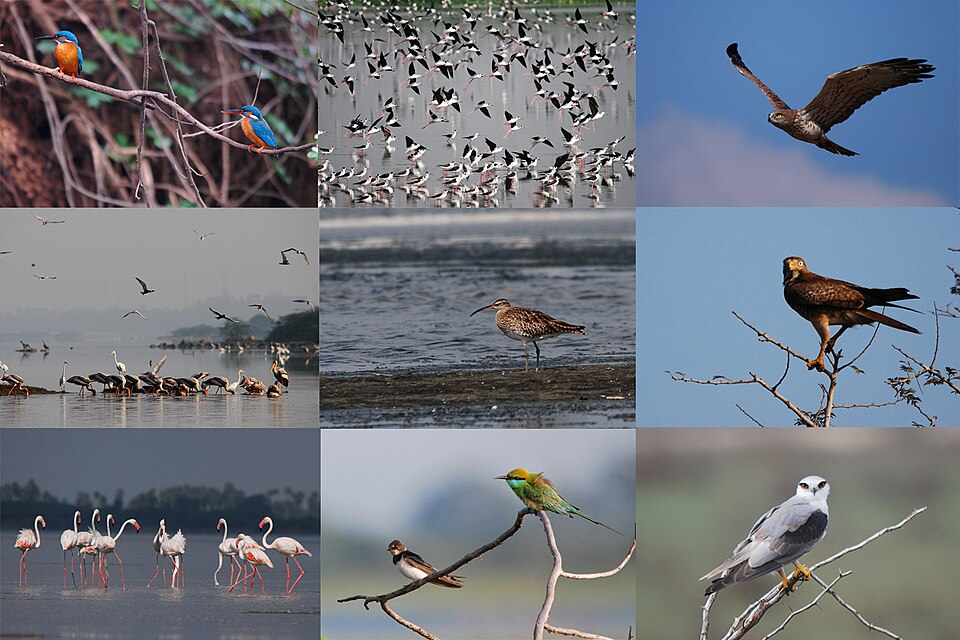
Vedanthangal
One of India's oldest water bird sanctuaries, hosting thousands of exotic migratory arrivals every winter.
View on MapPallikaranai Marsh
A vital urban wetland situated right next to modern tech parks, sustaining rare avian species and aquatic flora.
View on Map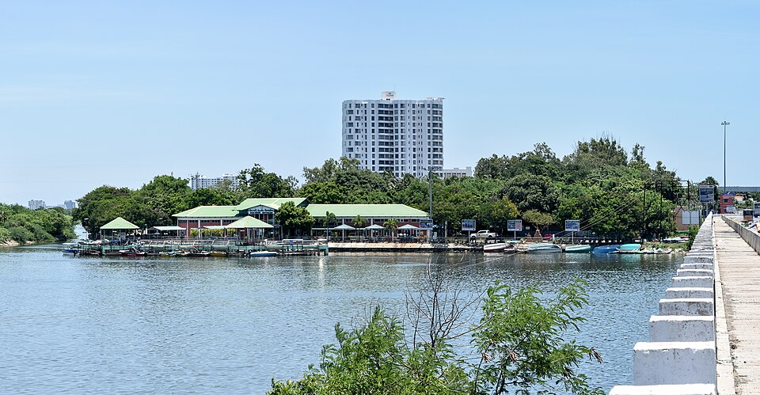
Muttukadu Backwaters
Serene, wind-swept backwaters ideal for a quiet afternoon of rowing and escaping the noise of the main city.
View on Map
Guindy National Park
A rare, dense national park located entirely within city limits, home to free-roaming blackbucks and spotted deer.
View on MapChetpet Ecopark
A restored, tranquil lake offering a surprisingly calm spot for angling and walking amidst the urban heat island.
View on Map